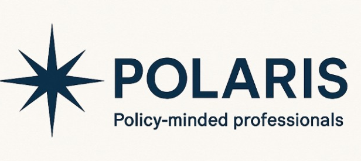

Identità visiva
Guida rapida a marchio, colori, caratteri e direzione artistica di Polaris, per tenere coerenti sito, presentazioni, inviti e social.
Il marchio è composto da una stella a otto punte (quattro lunghe e quattro corte) e dal nome POLARIS in maiuscolo, con il descrittore “Policy-minded professionals”. La stella da sola si usa come simbolo: favicon, avatar dei profili social, elemento grafico ricorrente.

Una notte serena: il blu del logo come colore portante, l’avorio come carta, un azzurro freddo per i dettagli e l’ottone come unica nota calda, la luce della stella. L’ottone si usa con parsimonia: parole in evidenza, numeri, piccoli simboli.
Polare#0C2F4A
Logo, testi, blocchi pieni
Notte#071D2F
Sfondi scuri, hero, piè di pagina
Avorio#FAF7F2
Sfondo principale
Pergamena#F1ECE3
Sezioni alternate
Bruma#A9BED1
Linee, ritratti, grafici
Ottone#C29B57
Accento su chiaro
Ottone chiaro#E3C68E
Accento su scuro
Ardesia#4A5D6E
Testo secondario
Proporzioni indicative in una composizione: avorio e pergamena 60%, polare e notte 30%, bruma 7%, ottone 3%.
Due famiglie gratuite (Google Fonts). Un bastoni geometrico, vicino al lettering del logo, per il marchio, le etichette e il testo corrente; un serif editoriale per titoli e citazioni, che dà il tono da rivista di approfondimento.
Titoli · citazioni
Newsreader Italic
Light 300 per i titoli grandi, Regular 400 per i titoletti. Il corsivo, in ottone, mette in evidenza una sola idea per titolo.
Marchio · etichette · testo
MANROPE
Regular 400 per il testo, Bold 700 per le etichette in MAIUSCOLETTO spaziato (+12–18%), Bold 700 con spaziatura +4% per il nome POLARIS.
L’immaginario è quello della navigazione notturna: un cielo scuro, una stella che orienta, una costellazione che collega punti diversi, come il network collega persone diverse.
Il motivo grafico principale: punti sottili uniti da linee in bruma su fondo notte. Ogni punto è un membro; la stella polare è il punto più luminoso.
L’unica nota calda è un alone leggero attorno alla stella e le parole chiave in corsivo. Mai sfondi pieni color ottone.
Foto dei membri ritagliate a cerchio e rese monocrome sul tono bruma, così foto diverse sembrano una serie unica.
Struttura editoriale: filetti sottili da 1px, numerazione in corsivo (01, 02…), margini generosi. Niente ombre, niente angoli arrotondati.
Se servono immagini: notturni, cieli, paesaggi italiani all’alba o al tramonto, desaturati e virati verso il blu. Niente foto da archivio con persone in posa.
Deformare o ruotare la stella, cambiare il colore del logo al di fuori di polare/avorio, usare gradienti vivaci o più di un colore caldo.